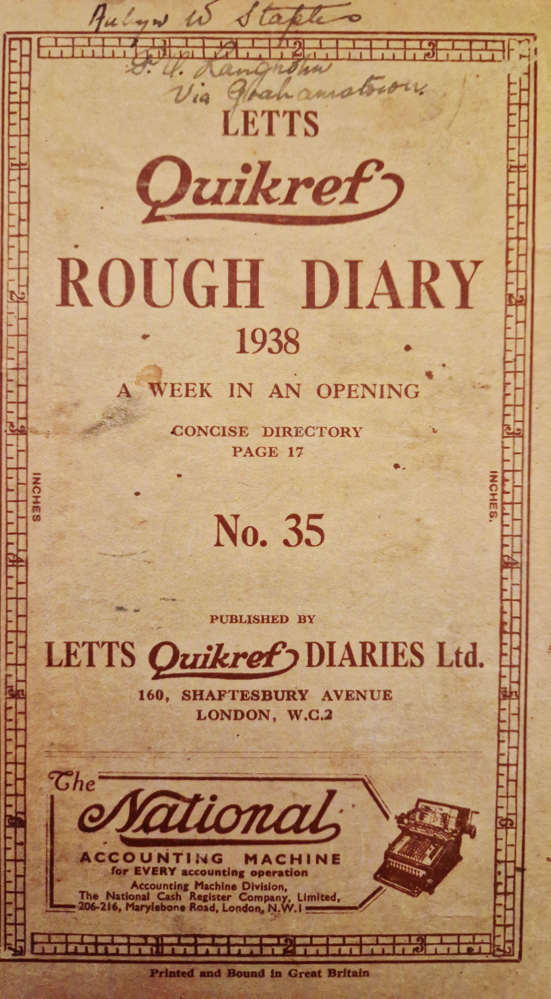

Aubyn Warner Staples Diary
Aged around 24 years old?
This diary was written in 1938 in the Eastern Cape of South Africa.
Attitudes back then were very different, where these are offensive
I will try remove them but will try keep as much of the original
content as possible for the sake of authenticity.
These views are NOT my own, I am trying to keep a bit of history alive.
Glynn Staples Skaffen1@gmail.com.
1st January 1938 - Saturday Fine bright day.
Rita & Jean with Dad, Mom and I.
At the Kleinemonde. Went spearing last night 9 - 1.30 PM-AM
at Clayton's Rocks. Got 1 Jan Bruin, 1 Moonie each
about 7lbs. and 29 Kolsterts. Took picture of them.
Listened at L.E.A. Palmers to the Grand Prix. Buller Meyer Rily I
Monkey Richardson Rily III while Sienna Mazzera #1 II.
2nd January 1938 - Sunday Fine bright day - foggy night
Last night Russell Smailes & I went spearing -
got 17. 2. Jan Bruins. Played Kan-U-Go at Brinks
till 10 P.M., then had a chat at "Y worri" with
Prof. Omar Cooper (Entomology) then went spearing.
" " " working on False Coddling Moth.
3rd January 1938 - Monday Fine day warm
Went spearing last night at Oyster Rocks - got
1 Kolstert and 11 springers. Today went up to Claytons
Rock's with Palmer crowd. After a days fishing got
2 high waters, which I gave to Owen Pike.
Bait was plentify. Spent the evening
playing Monoply with Eric and the boys
down at Jocks.
4th January 1938 Tuesday Rather hot.
Went up to Claytons Rocks with the
Palmer crowd. Fished all day but
without success. Doreen Ray & I went
to watch the children playing games on
the sand hills. Oh boy, can the rising
generation kiss?
Dad broke his rod.
5th January 1938 Wednesday
Dad's birthday. Brink, Jock, Dad & I
left the Kleinemond this morning at 7 for
home in Merricks V8. At 'Comfort'
I got onto my bike and rode via
Bathurst to 'Curries Drift'. Stopped for a
short while at Willmores & had tea.
Our turn for Dip again.
Got a letter from Rosemary.
Boys getting pine plants out of Willmores
ground.
Back to Kleinemond in the afternoon -
played bridge. Jerripico & bed.
6th January 1938 Thursday Clear - Nasty Cold West Wind
Reid River boys played Kleinemonde, Cricket
and were beaten. Watching was scant
pleasure though since there seemed to be
a regular sand storm. Altogether it
was a rotten day.
7th January 1938 Friday Fine Day. Rather Warm.
Started the day on Monoply up at S.Timms.
Then we went down to Jock's boat and
tested the engine. Eventually got it going
O.K.. then we got bait - had lunch, and
after several delays. Brink, Jock, Sharkey, Jimmy
Peter, Beaut & myself went up the river.
Sharkey caught a 6lb Cob on his river Line.
Prawn.
8th January 1938 Saturday Fine day. Shower in the evening
Text in the diary: Fire Insurances expire
Lazy day. Got up late, breakfast, then
read awhile. Then played monoply at Brinks.
at 5:30 I got the Terraplane out for Dad.
after which he Rita & Jean went home via P.A.
Mom & I played bridge with Mr. Mrs John Bradfield.
9th January 1938 Sunday Fine day.
Packed up our goods and by 10:15AM. Mom & I
had said good-bye to Kleinemonde, and headed for
home in the Lorry. After lunch at 'Comfort'
came on to Curries Drift; found everything O.K.
James Cultivating mealies below the house.
10th January 1938 Monday Hot morning. Cool breeze PM
Beat out Jumbo Ploughshares while oxen were being
fetched. Then sent 2 boys to harrow pine land.
2 boys to cultivate mealies below house. Balanee
to hoe & cut down trees. Dad came over
to see third ploughing of pine land started. Majic
proves a failure. Jumbo must plough. More
bullocks needed, so Kewitt & Mfumfu go with Dad
to bring bullocks back tomorrow - and 2 Cows
11th January 1938 Tuesday Fine day. Warm
Text in Diary: Hilary Law Sittings begin
After starting the work on 'Curries Drift', I went
home to 'Comfort', and then took Mom & Rita to
town on the lorry. Had dinner in the Gardens.
Got home at 5:30PM., had supper & came on to
Curries Drift. Boys hoeing.
Two boys chopping down bush east of orchard. Papai & Koffee.
Two boys harrowing pine land hired from Lorry Penny. Pau & leader
Two boys cultivating Mealies below house. James & Bus.
12th January 1938 Wednesday Very hot morning. Cool South Wind PM Signs of Rain : Cloudy just after 4P.M.
Sent Kewitt, Pav, a Leader to plough in Lorries
ground. 3rd ploughing about 1ft. deep. Jumbo plough.
James & Bus harrowing in the mealies
Matotwani worked with me, disc harrowing
between oranges. Weeds are tall tough
and the ground well carpeted. Marigold, Burweed
and Stinkblom. Never in my life seen so
many of either variety. Twas very hot and
smelly work.
Tractor ran eight hours.
Put in 8 gals. paraffin.
13th January 1938 Thursday hot windy day. W.
After getting the boys set to work which
means the usual sharpening of plough-
shares etc. I went home to ask Dad
to please come over tomorrow & to first go
to Town and get me two hoes and
six spades so that tomorrow we can
plant pines. Spent the rest of the
day at home. Took C.B. Austen's
Durant cylinder head off, discovered broken piston.
14th January 1938 Friday Cloudy windy Day. W.
Sunset last night I came back to
Curries Drift. This morning I got up
early, started the Tractor & harrowed
and rolled the land. At nine Dad came
over with the spades & we started planting
pines. Plants are very poor - have to
put two in a hole. Planted four rows.
Went home in the evening.
15th January 1938 Saturday Warm Day.
At "Comfort". Lazed round reading
all morning. In the afternoon got
the Terraplane ready and after an
early supper went to town to
see The "Prisoner of Zenda". Rita
and I sat in the Dickie.
16th January 1938 Sunday Cold Drizzle, very slight
Started work fairly late, but have got pines
11.5 rows planted today. Drizzle interfered
with the ploughing. A shame.
17th January 1938 Monday Drizzle AM. Very hot & W Wind PM.
Planting pines. Had breakfast & found
that the boys had caught up wiht my
marking. Marked more. Noted that more
plants were needed. Too wet for oxen, so
went back for tractor. Wouldn't start. Wires
wet. Discovered impulse starter blade broken
Eventually she started. Got a lot of work
done today - but what a rush. Spent the
evening at "Comfort" with Rita & J&as. Mom & Dad Masonic.
18th January 1938 Tuesday Foggy Morn. Very hot day. Wind Slight W.
Got a good start from home (Comfort)
had breakfast at 'Curries Drift', & went up
to Pines. got there just as they had
finished the marked rows. Tractor had
to finish the acre being ploughed. Oxen played
out on account of heat. By tonight
however I have everything ready for
another 10,000 plants. Tractor worked
6 and a half hours. Part time with Matotwe.
19th January 1938 Wednesday Dry West Wind. V.H.
Planting pines. Matotwane marking.
Cleaned the tractor, fitted a
switch. Completed the greasing.
Left last night because the gun would
not operate, due to paper in the
grease. In the late afternoon
went to Comfort for supper
and to see about meal for
rations. Dad has broken spring
of lorry & just about burned the
endine out.
20th January 1938 Thursday Extremely Hot A.M. 113 in shade. Slight rain 5 P.M.
Left home this morning & on arrival at Curries D.
pulled the motorbike engine down -
found nothing wrong. Dad came
over to see Powell. But
the damn fool only hedged around. All a failure! Its
been as hot as the Devil till 3. P.M.
4 bullocks ill.
21st January 1938 Friday Cool. Rained fairly hard P.M.
Took tractor up to where I'm
planting pines, and did quite a
good few acres of harrowing in the
morning. At half past one the rain
came down, and I had to dismiss
the boys. I went home. Mag got
wet and gave trouble in the Culvert.
22nd January 1938 Saturday Rain.
Still raining beautifully. Lounged
around and read all morning,
then in the afternoon we all went
up to Watsons, and from then
on into town to see The Plainsmen.
Watsons came too.
23rd January 1938 Sunday Rain approx 1" Clear Cool
Left Comfort early for Curries Drift
after breakfast took the tractor up to
the land and ploughed till 1 from 8.30.
In the afternoon harrowed in oranges.
X 9hrs 13 gals.
24th January 1938 Monday Fairly hot. Misty morning
Started Matotwani oiling the tractor
and I went over to Lorry Pennys
to phone Dad regarding the work at
Comfort. Then disc harrowed in the
oranges and that strip of land above
the Washingtons, which was blue with
burweed. Then I started for home
with the tractor to plough 'Comfort' Lands.
** Cob? or cod - D's often changed to B's in original.
** Jan Bruins - a kind of fish.
** Jerripico - some sort of South African wine?
